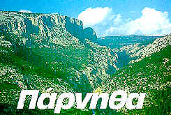
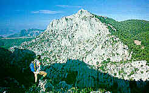
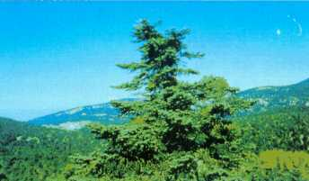

|
Ετος ίδρυσης: 1961 Εκταση πυρήνα: 3.816 εκτ. Ο Εθνικός Δρυμός Πάρνηθας ιδρύθηκε με σκοπό τη διατήρηση της πλούσιας άγριας χλωρίδας και πανίδας, σε απόσταση 40 χιλιομέτρων βόρεια της Αθήνας με άνετη προσπέλαση από ασφαλτόδρομους. Το υψομετρικό εύρος του Δρυμού αρχίζει από τo υψόμετρο των 400 περίπου μέτρων ( νότιο όριο "Μετόχι") και φθάνει στις ψηλότερες κορυφές του βουνού, την "Καραμπόλα" (1.413 μ.) , το "Ορνιο".(1350 μ.), το "Ξεροβούνι" (1120 μ.) , το "Αυγό" (1150 μ.), τον "Αέρα" (1.160 μ. ) κ.α.Η μεγαλύτερη έκταση του δρυμού καλύπτεται από δάση κεφαλληνιακής ελάτης (Abies cephalonica). Οι χαμηλότερες περιοχές κάτω των 800 μ. καλύπτονται από χαλέπιο πεύκη (Pinus halepensis) και θάμνους της τυπικής μεσογειακής βλάστησης (πουρνάρια, κουμαριές , ρούδια, αριές, φιλίκια, κ.λ.π.). Η χλωρίδα της Πάρνηθας, αρκετά πλούσια (ξεπερνά τα 1.000 είδη) , |
 |
|  | είναι χαρακτηριστική των βουνών της Νότιας Ελλάδας. Δεν υπάρχουν συστηματικές - ολοκληρωμένες μελέτες για την πανίδα του Δρυμού, που κυρίως αποτελείται από κοινά ή ευρέως εξαπλωμένα στον Ελλαδικό χώρο είδη με εξαιρετικό ενδιαφέρον για τους παρατηρητές πτηνών, εξαιτίας της γειτνίασης της Πάρνηθας με την Αθήνα. Η Πάρνηθα είναι το μοναδικό βουνό της Ελλάδας όπου υπάρχουν ελάφια του είδους Cervus elaphus. Σε έκταση 1.200 στρεμμάτων του Δρυμού, λειτουργεί εκτροφείο θηλαστικών ειδών θηραμάτων (ελαφιών και ζαρκαδιών) για εμπλουτισμό και άλλων περιοχών. Η Πάρνηθα προσφέρει στους αναρριχητές αξιόλογα αναρριχητικά πεδία, όπως το "Αρμα" στο μοναστήρι των Κλειστών, το "Φλαμπούρι", το "Μεγ. Αρμένι" κ.λ.π., λόγω των ασβεστολιθικών βράχων. Υπάρχουν ορειβατικά καταφύγια που λειτουργούν τα Σαββατοκύριακα και μπορούν να προσφέρουν διανυκτέρευση και ξεκούραση στους οδοιπόρους της Πάρνηθας. Λόγω της κοντινής απόστασης |
| από την Αθήνα η Πάρνηθα έχει πολύ καλό οδικό δίκτυο, με ασφαλτόδρομους, με αστική και υπεραστική συγκοινωνία από την νότια περιοχή Αχαρνών. |
|
(Περισσότερες πληροφορίες: Δασαρχείο Πάρνηθας Αχαρνές. Τηλ. : 01-2440003) Πίνακας με πλήρη αναλυτικά στοιχεία. |
 |